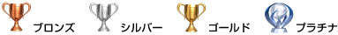

PlayStation™Network > トロフィーコレクションについて
トロフィーコレクションについて
対応したゲームで、ゲーム中にある条件を達成するとトロフィーを獲得できます。獲得したトロフィーはPS3™本体に保存されます。
トロフィーの種類
獲得条件の難易度などにより、4つのグレードがあります。トロフィーのグレードや数、トロフィーの獲得条件は、ゲームによって異なります。

獲得したトロフィーを確認する
1. |
|
|---|---|
|
|
|
2. |
トロフィーを確認したいゲームを選ぶ。 |
|
|


トロフィーの情報をPSNSMのサーバーに保存する
Sony Entertainment Networkにサインアップすると、獲得したトロフィーの情報をPSNSMのサーバーに保存できます。サーバーに保存したり、保存したトロフィーの情報を確認したりするには、PSNSMにサインインする必要があります。
トロフィーの情報は、次のときにPSNSMのサーバーに自動的に保存されます。
 （PlayStation™Network）＞
（PlayStation™Network）＞ （トロフィーコレクション）を選んだとき
（トロフィーコレクション）を選んだとき （フレンド）>［プロフィール］で（トロフィーを比較）を選んだとき
（フレンド）>［プロフィール］で（トロフィーを比較）を選んだとき

ヒント
- PlayStation®4やPlayStation®Vitaに登録したアカウントと同じアカウントでサインインしている場合、PS4™やPS Vitaで獲得したトロフィーも表示できます。
- PSNSMにサインインした状態で、（PlayStation™Network）から（トロフィーコレクション）を選んで
 ボタンを押し、オプションメニューで［モード切りかえ］を選ぶと、［オフラインモード］に変更できます。［オフラインモード］では、PS3™本体に保存されているトロフィーの情報を確認できます。
ボタンを押し、オプションメニューで［モード切りかえ］を選ぶと、［オフラインモード］に変更できます。［オフラインモード］では、PS3™本体に保存されているトロフィーの情報を確認できます。 - PlayStation®Plusのゲームトライアルで獲得したトロフィーはサーバーに保存されません。ゲームを購入すると、購入前に獲得したトロフィーがサーバーに保存されます。
トロフィーの公開範囲を設定する
（PlayStation™Network）＞［アカウント情報］＞［プライバシー設定］でトロフィーの公開範囲を設定できます。
ゲームごとに公開／非公開を設定する場合は、（PlayStation™Network）＞（トロフィーコレクション）で設定したいゲームを選んでボタンを押し、オプションメニューから［プライバシー設定］を選びます。［このゲームのトロフィーを公開する］のチェックを外すと設定したゲームのトロフィーだけを非公開にできます。
ヒント
- （PlayStation™Network）＞［アカウント情報］＞［プライバシー設定］でトロフィーの公開設定を［公開しない］に設定している場合は、その設定が優先されます。ゲームごとの設定で［このゲームのトロフィーを公開する］にチェックが付いていてもトロフィーは公開されません。
- 非公開に設定すると、ほかのプレーヤーにはトロフィーを未取得の場合と同じように表示されます。
- ゲームごとに異なる公開範囲を設定することはできません。
トロフィーの獲得状況をフレンドと比較する
（フレンド）でトロフィーの獲得状況をフレンドと比較できます。
詳しくは、（フレンド）＞［フレンドリストについて］＞［プロフィールを見る］をご覧ください。